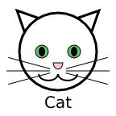

Graphics systems such as Canvas use raster graphics. In this approach, the image being drawn is regarded as a rectangular collection of pixels, each with a particular color. This is often referred to as bitmap graphics. Since most display devices (and printers) are essentially raster devices, displaying the image is essentially a matter of copying pixel data. (Compression, image scaling, and translucency (alpha) may complicate this copying, of course.)
Raster graphics are especially appropriate for photographs. Tools like GIMP and Photoshop are designed for manipulating bitmap images. Formats like JPEG are ideal for storing them. PNG and GIF are also bitmap formats. Once uncompressed, all of them are simply series of numbers representing the colors of successive pixels.
In a vector graphics, images are represented as series of commands for drawing various shapes. While certain specialized monitors and plotters are capable of displaying vector graphics directly, generally a specialized interpreter is required to render them.
Vector graphics are appropriate for images that can be described in terms of geometric forms, gradients of color, etc. Tools like Inkscape and Adobe Illustrator work well with vector images.
SVG, which stands for Scalable Vector Graphics is the format developed by the World Wide Web Consortium (W3C) for vector graphics. Work on this format began in 1998, and modern Web browsers (inluding IE 9+) support most features.
SVG images are XML text files. It represents the image as a hierarchy of graphical elements, which can include various shapes and paths, raster graphics, and text. These elements can have various attributes and content that provides for interactivity, animation, hyperlinks, etc.
Here is the raw code for a simple SVG:
<?xml version="1.0"?>
<!DOCTYPE svg PUBLIC "-//W3C//DTD SVG 1.1//EN"
"http://www.w3.org/Graphics/SVG/1.1/DTD/svg11.dtd">
<svg width="144" height="144"
xmlns="http://www.w3.org/2000/svg"
xmlns:xlink="http://www.w3.org/1999/xlink">
<title>Cat</title>
<desc>Drawing of a cat</desc>
<defs>
<style type="text/css"><![CDATA[
.head,
.ear
{
stroke: black;
stroke-width: 3;
fill: white;
}
.eye
{
stroke: black;
fill: rgb( 100, 200, 100 );
}
.pupil
{
fill: black;
}
.whiskers,
.mouth
{
stroke: black;
fill: none;
}
.nose
{
stroke: black;
fill: rgb( 255, 200, 200 );
}
.mouth
{
stroke-width: 2;
}
text
{
font-family: sans-serif;
font-size: 20px;
text-anchor: middle;
}
]]></style>
</defs>
<polygon class="ear" points="30.5, 40 21.1, 13.1 48, 22.5" />
<polygon class="ear" points="113.5, 40 122.9, 13.1 96, 22.5" />
<circle class="head" cx="72" cy="64" r="48" />
<circle class="eye" cx="52" cy="64" r="8" />
<ellipse class="pupil" cx="52" cy="64" rx="4" ry="6" />
<circle class="eye" cx="92" cy="64" r="8" />
<ellipse class="pupil" cx="92" cy="64" rx="4" ry="6" />
<g id="whiskers" class="whiskers">
<line x1="62.3" y1="85.4" x2="10.2" y2="71.4" />
<line x1="62" y1="88" x2="8" y2="88" />
<line x1="62.3" y1="90.6" x2="10.2" y2="104.6" />
</g>
<use xlink:href="#whiskers" transform="scale(-1, 1) translate(-144, 0)" />
<path class="nose" d="M 78, 78 L 66, 78 A 6 8 0 0 0 78, 78 Z" />
<path id="mouth" class="mouth" d="M 48, 92 A 12 8 0 0 0 72, 92" />
<use xlink:href="#mouth" transform="scale(-1, 1) translate(-144, 0)" />
<text x="72" y="134">Cat</text>
</svg>
As you can see, it looks quite a bit like HTML, though with a different set of tags. Like HTML, CSS styling can be applied to various elements, which can be selected by tag or class.
<img> elements
Modern browsers support SVG files as the src for <img> elements. For example:
Using Inkscape, I converted this to a PNG file, which we can view for comparison. At the original scale, they look the same:

But if we resize them, either using CSS or as I do here, using the width attribute, the difference becomes apparent. First the SVG:
Then the PNG:
This shows where the Scalable in SVG comes in. Because the browser's renderer is not just putting down pixels (and doing its best to anti-alias them for smoothness), but actually drawing lines, circles, etc., at the new scale, the image retains its sharpness.
Modern browsers also support SVG graphics where images are referrenced in CSS, e.g. as background images.
HTML5 (and XHTML in all browsers since about 2012) allows the use of the <svg> tag, and all of the corresponding nested SVG tags. Here comes one now:
You can use your browser's Inspect Element option to view the elements herein.
It is not just a "black-box" image for the browser now, but a collection of DOM elements within our document. That's where the fun really begins. For one thing, this allows us to move the styling of the constituent elements into the page's style sheet. More importantly, it opens up the possibility of dynamically inserting, removing, modifying, and restyling these image elements using JavaScript, just as we can do for other elements of the DOM.
Notice that, unless you specify otherwise in your CSS, an <svg> element is displayed inline, as is an <img>. You can set display: block, for example, to override this.
There are many features and details of SVG that we cannot cover in this course. The W3C maintains the official documentation. The Mozilla Developer Network has a nice SVG Tutorial. A good book is J. David Eisenberg & Amelia Bellamy-Royds, SVG Essentials: Producing Scalable Vector Graphics with XML, O'Reilly, 2014 (Print ISBN: 978-1-4493-7435-8, Ebook ISBN: 978-1-4493-7434-1).
The ability to embed SVG elements directly into the DOM of an HTML page opens up many possibilities for programmatically-controlled graphics. Just as jQuery simplifies working with the HTML DOM, a popular open-source library called Raphaël simplifies working with SVG. In fact, just as jQuery also smooths over browser differences, Raphaël even works with older browsers that do not support SVG, by falling back to an older approach called VML (Vector Markup Language).
The Raphaël library provides a single global variable, Raphael, which provides a variety of useful utility methods. Most important, it can be called as a function to create the element in which you can draw. The Raphaël documentation sometimes calls this a "canvas", but it is documented as having the Paper interface, and so we shall use this term.
The most useful way to call the function is to provide the DOM element which will contain the SVG element Raphaël creates, together with the desired width and height, e.g.:
var element = $('#svgHolder');
var paper = Raphael( element, 320, 200 );
This paper object is the one you will use for most drawing operations.
We can use the Paper.rect() function to specify a rectangle with four parameters: x (left), y (top), width, and height.
var rect1 = paper.rect( 30, 20, 100, 50 );
Unlike a raster graphics system like Canvas, this doesn't just draw a rectangle. It inserts an rect element into the DOM, as a child of the paper element, and returns a reference to that element. This is valuable, as it allows us to make subsequent modifications to the rectangle.
Elements have several properties that affect how they are drawn. The attributes stroke and stroke-width specify the color and width of the stroke (outline). We set the attributes with the attr() method, passing an object with the attibute names and values. For example:
var rect1 = paper.rect( 30, 20, 100, 50 );
rect1.attr( {
stroke: 'rgb( 0, 200, 0 )',
'stroke-width': 10
} );
The fill attribute can also be a color:
var rect1 = paper.rect( 30, 20, 100, 50 );
rect1.attr( {
fill: 'rgb( 0, 0, 200 )'
} );
We can combine these, and even use alpha for translucency:
var rect1 = paper.rect( 30, 20, 100, 50 );
rect1.attr( {
stroke: 'rgba( 0, 200, 0, 0.5 )',
'stroke-width': 10,
fill: 'rgb( 0, 0, 200 )'
} );
Notice that the stroke is centered on the border of the rectangle, so that half of the stroke overlaps the fill.
The default fill is 'none', but the default stroke is 1-pixel width and black, or something similar. You will need to set it explicitly to 'none' if you don't want an outline.
There are several other stroke and fill settings. For example, you can get dotted and/or dashed lines. You can also specify linear or radial gradients or the URL of a bitmap (e.g. .png) file for fill.
With Raphaël, you can create rectangles with rounded corners by adding a fifth parameter, the corner radius, to rect().
var rect1 = paper.rect( 30, 20, 100, 120, 15 );
rect1.attr( {
stroke: 'rgb( 0, 200, 0 )',
'stroke-width': 10,
fill: 'rgb( 0, 0, 200 )'
} );
The circle() method takes three parameters: the x and y coordinates of the center, and the radius:
var circle1 = paper.circle( 100, 80, 50 );
circle1.attr( {
stroke: 'rgb( 0, 200, 0 )',
'stroke-width': 6,
fill: 'rgb( 0, 0, 200 )'
} );
The ellipse() method takes four parameters: the x and y coordinates of the center, the x-radius and the y-radius:
var ellipse1 = paper.ellipse( 100, 80, 50, 30 );
ellipse1.attr( {
stroke: 'rgb( 0, 200, 0 )',
'stroke-width': 6,
fill: 'rgb( 0, 0, 200 )'
} );
var ellipse2 = paper.ellipse( 250, 80, 30, 50 );
ellipse2.attr( {
stroke: 'rgb( 0, 0, 200 )',
'stroke-width': 6,
fill: 'rgb( 0, 200, 0 )'
} );
In SVG, a path is represented as a string consisting of one-letter commands followed by sequences of numbers as parameters to the commands. For example, my cat's nose was drawn using this path:
<path class="nose" d="M 78, 78 L 66, 78 A 6 8 0 0 0 78, 78 Z" />
Raphaël also allows you to use a string, but improves on this somewhat by also allowing an array, so the equivalent would be
var x1 = 78, y1 = 78,
x2 = 66, y2 = 78;
var nose = paper.path( [ 'M', x1, y1,
'L', x2, y2,
'A', 6, 8, 0, 0, 0, x1, x1,
'Z'
] );
nose.attr( {
stroke: 'black',
fill: 'rgb( 255, 200, 200 )'
} );
One advantage using arrays has is that we can use variables in addition to hard-coded values.
These are the main path commands:
Because SVG elements are in the DOM, it is possible to set event handlers on them. Raphaël provides methods for setting just about any mouse, touch, or drag event you want on an element. Here's a simple example:
var rect = paper.rect( 10, 10, 130, 100 );
var circle = paper.circle( 210, 75, 60 );
rect.attr( { fill: 'blue' } );
circle.attr( { fill: 'blue' } );
rect.click( function( ) {
var curColor = this.attr( 'fill' );
var newColor = (curColor === 'blue') ? 'red' : 'blue';
this.attr( { fill: newColor } );
} );
circle.mouseover( function( ) {
this.attr( { fill: 'red' } );
} );
circle.mouseout( function( ) {
this.attr( { fill: 'blue' } );
} );
Raphaël's animate() method makes it easy to modify an element's attributes over time.
In its simplest form, we specify an object with the final value of the attributes we want to change, as well as the duration of the animation, in milliseconds.
We can also provide the "easing" function, which indicates how the animation accelerates or decelerates. We can also provide a function to be called when the animation completes. In the example below, when the circle's first animation finishes, a new animation is begun.
var rect = paper.rect( 10, 10, 10, 100 );
var circle = paper.circle( 75, 80, 50 );
rect.attr( { fill: 'green' } );
circle.attr( { fill: 'green' } );
rect.animate( {
y: 130,
width: 100,
height: 10,
'border-width': 10
},
2000 );
circle.animate( {
cx: 240,
cy: 75,
r: 5,
opacity: 0.5
},
1500,
'easeInOut',
function( ) {
circle.animate( {
r: 50,
opacity: 1.0
},
500,
'bounce' );
} );
In addition to the official Raphaël Web site, the book Damien Dawber, Learning Raphaël Vector Graphics, Packt Publishing, 2013 (ISBN: 978-1-78216-916-1), offers good coverage of this library.